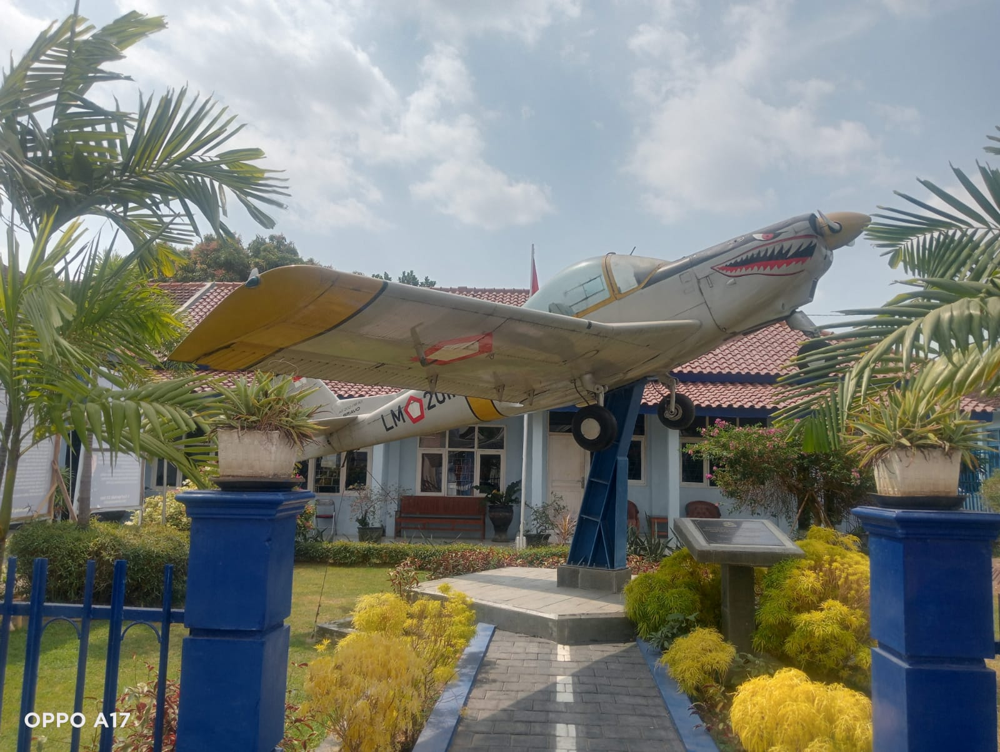

Sejarah pesawat Bravo AS 202/18 A3
AS 202 Bravo adalah pesawat Latih Dasar yang digunakan oleh TNI AU untuk melatih siswa-siswa Sekolah Penerbang TNI AU, khususnya IDP PSDP pernah mengenyam pesawat ini.
Pesawat ini dibuat oleh gabungan pabrik pesawat antara FFA dari Switzerland yang membuat bagian badan ekor dan kemudi dan SIAI-Marchetti dari Italy yang membuat bagian sayap, landing gear, dan pemasangan mesin. Penerbangan perdananya sudah dimulai sejak tahun 1969. Pesawat ini didesain berdasarkan regulasi dari FAA part 23, FOCA (Swiss Aviation Authority) dan UK CAA.
Banyak keunggulan pesawat dengan power 180 pk ini, antara lain menggunakan inverted fuel tank system yang membuat pesawat ini memiliki keunggulan unlimited inverted time pada limitasi.
Jumlah produksi pesawat ini mencapai 214 unit, dimana terbanyak dalam sejarah AS202 digunakan oleh Sekbang TNI AU sebanyak +/- 40 unit, kemudian rekor terbanyak untuk sipil dipegang oleh Patria pilot training di Finlandia tahun 2000 sd 2011.
Pesawat ini ditenagai dengan mesin Lycoming AEIO-360, namun varian lainnya untuk demonstrasi menggunakan mesin yang lebih besar ditenagai dengan 540 atau 250 PK dan mesin turboprop.
Filosofi Pesawat Di Depan Sekolah SMP Angkasa Adisutjipto
Filosofinya agar lulusan UNS mampu terbang tinggi menggapai cita-cita," kata Hadi.
pilot yang menerbangkan
Pesawat AS 202 Bravo pertama kali diterbangkan oleh Mario Faccioli, seorang pilot uji coba utama dari Aermacchi. Faccioli bertanggung jawab untuk menguji performa dan stabilitas pesawat selama penerbangan perdana pada tanggal 27 Maret 1969.
Sebagai pilot uji coba, dia memainkan peran penting dalam memastikan bahwa pesawat ini aman dan siap untuk produksi serta penggunaan lebih lanjut.